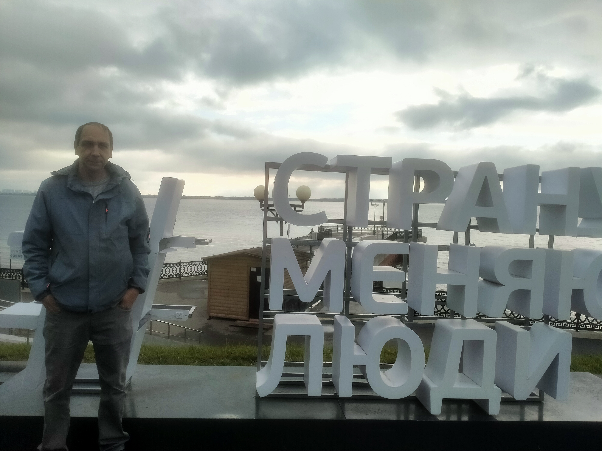

👤 Обо мне

Мальцев Андрей Николаевич
Инженер-электрик | Разработчик
Специалист в области электротехники и энергетики. Более 20 лет опыта работы с электроустановками до и выше 1000 В, проектирование систем электроснабжения, расчёт потерь напряжения, выбор сечений кабелей и аппаратов защиты.
📚 Образование
- БПТ — Электротехнисеское и электромеханическое оборудование
- Профессиональная переподготовка — Программирование на Python (2026) Современные языки программирования и основы разработки интернет-приложений
- Курсы повышения квалификации — Современные системы релейной защиты (2024)
💼 Опыт работы
- ООО «Энергопроект» — Ведущий инженер (2015-2020)
- АО «Электросеть» — Главный специалист (2020-2023)
- Самозанятость — Разработка электротехнических расчётов (с 2023)
🛠️ Навыки
AutoCAD
SolidWorks
Python
JavaScript
HTML/CSS
SQL
С++
С#
Java
Kotlin
📜 Сертификаты
- ✅ Допуск к работе с электроустановками до 1000 В (IV группа)
- ✅ Допуск к работе с электроустановками выше 1000 В (V группа)
- ✅ Сертификат Python Developer (Stepik)
- ✅ Курс «Электробезопасность» (2024)
🏆 Достижения
- 🏅 Оптимизация системы электроснабжения торговых помещений — экономия 15% электроэнергии
- 🏅 Разработка калькулятора потерь напряжения для внутреннего использования
- 🏅 Разработка приложения для рекламных видео стоек
- 🏅 Участие в программе наука и техника на РЕН ТВ — 2024» с уникалым электоромобилем
📞 Контакты
- Email: andreinri@yandex.ru
- 🐙 GitHub: https://nei121.github.io/uheba/
Данный сайт — моя лабалаторная работа по курсу «Современные языки программирования и основы разработки интернет-приложений». Все расчёты выполнены с использованием актуальных формул и нормативной документации (ПУЭ, СП 256.1325800.2016).